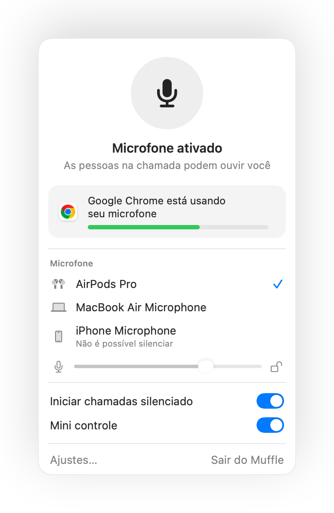

Como silenciar o microfone no Mac
Não existe uma tecla padrão para silenciar o microfone no Mac. Dependendo do app e da situação, você tem algumas opções, mas poucas funcionam em qualquer lugar.
Suas opções
- 1
O botão ou atalho do próprio app de chamada. Funciona apenas naquele app e enquanto a janela dele estiver em primeiro plano.
- 2
Em Ajustes do Sistema, Som, Entrada. Arrastar o volume de entrada para zero não é um silenciamento real em todos os microfones, e os apps podem aumentar o som de novo.
- 3
Um atalho global com o Muffle. Uma única tecla silencia o microfone diretamente, em todos os apps.
- 4
Seu fone AirPods. Com o Muffle, pressionar a haste silencia qualquer chamada ou videoconferência, inclusive no Google Meet pelo Chrome.

- O ícone do Muffle na barra de menus fica vermelho enquanto o microfone estiver desativado, em qualquer app que você usar.
- Sair do Muffle sempre ativa o microfone de novo.
Perguntas frequentes
O Mac tem um recurso nativo para silenciar o microfone?
Não em todo o sistema. O macOS só silencia o microfone dentro de apps compatíveis. O Muffle adiciona um recurso real para silenciar o sistema por completo.
Silenciar no Muffle funciona em todos os apps?
Sim. O Muffle desliga todos os microfones no nível do hardware, então nenhum app ouve você até que você ative o som novamente.